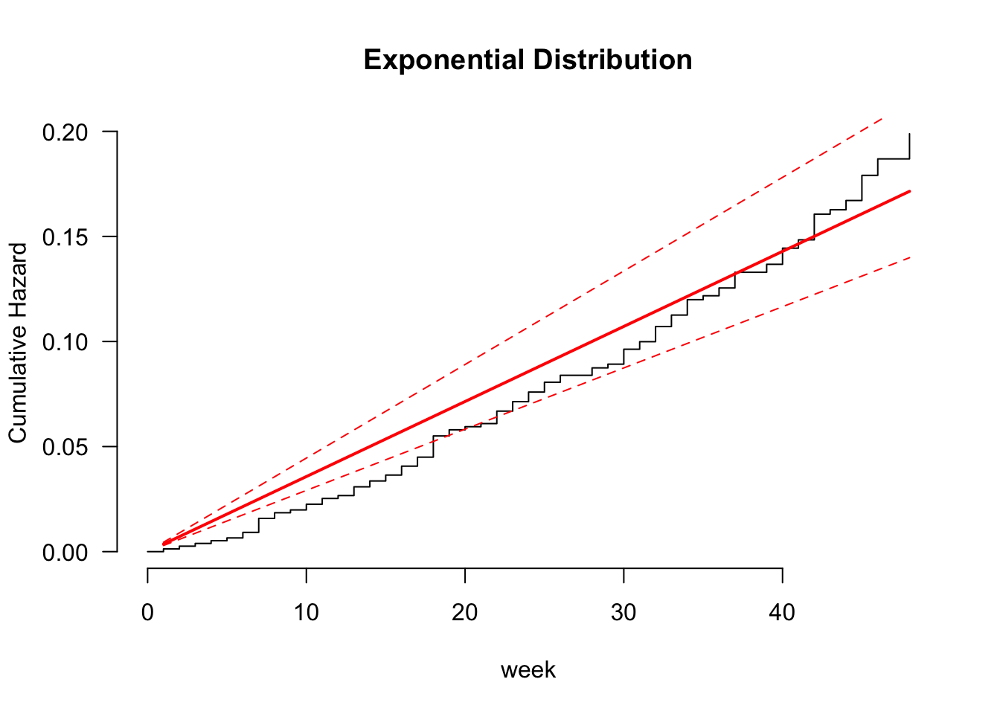

2 Accelerated Failure Time Model
##Model Building
hurr.aft.w <- flexsurvreg(Surv(hour, flood) ~ backup + age + bridgecrane + servo + gear + trashrack + slope + elevation, data = hurricane, dist = "weibull")
plot(hurr.aft.w, type = "cumhaz", ci = TRUE, conf.int = FALSE, las = 1, bty = "n",
xlab = "week", ylab = "Cumulative Hazard", main = "Weibull Distribution")hurr.aft.e <- flexsurvreg(Surv(hour, flood) ~ backup + age + bridgecrane + servo + gear + trashrack + slope + elevation, data = hurricane, dist = "exp")
plot(hurr.aft.e, type = "cumhaz", ci = TRUE, conf.int = FALSE, las = 1, bty = "n",
xlab = "week", ylab = "Cumulative Hazard", main = "Exponential Distribution")
hurr.aft.g <- flexsurvreg(Surv(hour, flood) ~ backup + age + bridgecrane + servo + gear + trashrack + slope + elevation, data = hurricane, dist = "gamma")
plot(hurr.aft.g, type = "cumhaz", ci = TRUE, conf.int = FALSE, las = 1, bty = "n",
xlab = "week", ylab = "Cumulative Hazard", main = "Gamma Distribution")hurr.aft.ll <- flexsurvreg(Surv(hour, flood) ~ backup + age + bridgecrane + servo + gear + trashrack + slope + elevation, data = hurricane, dist = "llogis")
plot(hurr.aft.ll, type = "cumhaz", ci = TRUE, conf.int = FALSE, las = 1, bty = "n",
xlab = "week", ylab = "Cumulative Hazard", main = "Log-Logistic Distribution")hurr.aft.ln <- flexsurvreg(Surv(hour, flood) ~ backup + age + bridgecrane + servo + gear + trashrack + slope + elevation, data = hurricane, dist = "lognormal")
plot(hurr.aft.ln, type = "cumhaz", ci = TRUE, conf.int = FALSE, las = 1, bty = "n",
xlab = "week", ylab = "Cumulative Hazard", main = "Log-Normal Distribution")##Goodness-of-Fit Tests
like.e = flexsurvreg(Surv(hour, flood) ~ backup + age + bridgecrane + servo + gear + trashrack + slope + elevation, data = hurricane, dist = "exp")$loglik
like.w <- flexsurvreg(Surv(hour, flood) ~ backup + age + bridgecrane + servo + gear + trashrack + slope + elevation, data = hurricane, dist = "weibull")$loglik
like.ln <- flexsurvreg(Surv(hour, flood) ~ backup + age + bridgecrane + servo + gear + trashrack + slope + elevation, data = hurricane, dist = "lnorm")$loglik
like.g = flexsurvreg(Surv(hour, flood) ~ backup + age + bridgecrane + servo + gear + trashrack + slope + elevation, data = hurricane, dist = "gamma")$loglik
like.ll = flexsurvreg(Surv(hour, flood) ~ backup + age + bridgecrane + servo + gear + trashrack + slope + elevation, data = hurricane, dist = "llogis")$loglik
like.f = flexsurvreg(Surv(hour, flood) ~ backup + age + bridgecrane + servo + gear + trashrack + slope + elevation, data = hurricane, dist = "genf")$loglik
pval.e.g = pchisq((-2*(like.e-like.g)), 2,lower.tail=F)
pval.w.g = pchisq((-2*(like.w-like.g)), 1,lower.tail=F)
pval.ln.g = pchisq((-2*(like.ln-like.g)), 1,lower.tail=F)
##pval.g.f = pchisq((-2*(like.g-like.f)), 1,lower.tail=F)
Tests = c('Exp vs. Gam', 'Wei vs. Gam', 'LogN vs. Gam')
P_values = c(pval.e.g, pval.w.g, pval.ln.g)
cbind(Tests, P_values)## Tests P_values
## [1,] "Exp vs. Gam" "1.15756879954454e-05"
## [2,] "Wei vs. Gam" "1"
## [3,] "LogN vs. Gam" "0.0113749320431249"No difference between Weibull and Gam -> use Weibull
##Variable Selection
full.model <- survreg(Surv(hour, flood) ~ backup + age + bridgecrane + servo + gear + trashrack + slope + elevation, data = hurricane, dist = "weibull")
empty.model <- survreg(Surv(hour, flood) ~ 1, data = hurricane, dist = "weibull")
back.model <- step(full.model,
scope = list(lower = empty.model,
upper = full.model),
direction = 'backward', k = qchisq(0.03, 1, lower.tail=FALSE))## Start: AIC=1496.55
## Surv(hour, flood) ~ backup + age + bridgecrane + servo + gear +
## trashrack + slope + elevation
##
## Df AIC
## - elevation 1 1492.3
## - age 1 1492.4
## - bridgecrane 1 1492.8
## - gear 1 1494.8
## - servo 1 1495.6
## - trashrack 1 1495.8
## - backup 1 1495.9
## <none> 1496.5
## - slope 1 1502.5
##
## Step: AIC=1492.31
## Surv(hour, flood) ~ backup + age + bridgecrane + servo + gear +
## trashrack + slope
##
## Df AIC
## - age 1 1488.1
## - bridgecrane 1 1488.5
## - gear 1 1490.5
## - trashrack 1 1491.7
## - servo 1 1491.7
## - backup 1 1491.8
## <none> 1492.3
## - slope 1 1499.2
##
## Step: AIC=1488.11
## Surv(hour, flood) ~ backup + bridgecrane + servo + gear + trashrack +
## slope
##
## Df AIC
## - bridgecrane 1 1484.2
## - gear 1 1486.5
## - trashrack 1 1487.3
## - backup 1 1488.1
## <none> 1488.1
## - servo 1 1488.9
## - slope 1 1495.0
##
## Step: AIC=1484.21
## Surv(hour, flood) ~ backup + servo + gear + trashrack + slope
##
## Df AIC
## - gear 1 1483.0
## - trashrack 1 1483.5
## - backup 1 1483.9
## <none> 1484.2
## - servo 1 1485.2
## - slope 1 1490.9
##
## Step: AIC=1482.97
## Surv(hour, flood) ~ backup + servo + trashrack + slope
##
## Df AIC
## - trashrack 1 1481.9
## - backup 1 1482.5
## <none> 1483.0
## - servo 1 1487.7
## - slope 1 1488.9
##
## Step: AIC=1481.88
## Surv(hour, flood) ~ backup + servo + slope
##
## Df AIC
## <none> 1481.9
## - backup 1 1482.2
## - servo 1 1486.4
## - slope 1 1487.8hurr.aft = survreg(Surv(hour, flood) ~ backup + servo + slope, data = hurricane, dist = "weibull")
summary(hurr.aft)##
## Call:
## survreg(formula = Surv(hour, flood) ~ backup + servo + slope,
## data = hurricane, dist = "weibull")
## Value Std. Error z p
## (Intercept) 4.7711 0.1524 31.31 < 2e-16
## backup 0.2710 0.1236 2.19 0.02831
## servo 0.3859 0.1306 2.95 0.00313
## slope -0.0606 0.0174 -3.47 0.00051
## Log(scale) -0.4381 0.0860 -5.10 3.5e-07
##
## Scale= 0.645
##
## Weibull distribution
## Loglik(model)= -729.2 Loglik(intercept only)= -744.8
## Chisq= 31.21 on 3 degrees of freedom, p= 7.7e-07
## Number of Newton-Raphson Iterations: 7
## n= 770survprob.75.50.25 = predict(hurr.aft, type = "quantile", se.fit = TRUE,p = c(0.25, 0.5, 0.75))
head(survprob.75.50.25$fit)## [,1] [,2] [,3]
## [1,] 44.05062 77.69575 121.52050
## [2,] 34.56747 60.96954 95.35976
## [3,] 44.05062 77.69575 121.52050
## [4,] 54.36369 95.88577 149.97070
## [5,] 64.79470 114.28381 178.74628
## [6,] 69.27767 122.19080 191.11324## (Intercept) backup servo slope
## 117.05233813 0.31122730 0.47091467 -0.05880652##Variable Impact
hurricane = hurricane %>% dplyr::mutate(pump = row_number())
#Servo impact
survprob.actual = 1 - psurvreg(hurricane$hour,
mean = predict(hurr.aft, type = "lp"),
scale = hurr.aft$scale, distribution = hurr.aft$dist)
new_time = qsurvreg(1 - survprob.actual,
mean = predict(hurr.aft, type = "lp") +
coef(hurr.aft)['servo'],
scale = hurr.aft$scale,
distribution = hurr.aft$dist)
hurricane$new_time = new_time
hurricane$diff = hurricane$new_time - hurricane$hour
impact.servo=data.frame(hurricane$hour, hurricane$new_time, hurricane$diff, hurricane$flood, hurricane$servo, hurricane$pump)
colnames(impact.servo)=c("O.hour","N.hour","Diff_servo","flood","servo", "pump")
impact.servo=subset(impact.servo,flood==1 & servo==0)
impact.servo %>% arrange(desc(Diff_servo)) %>% filter(O.hour <48 & N.hour >48)## O.hour N.hour Diff_servo flood servo pump
## 1 45 66.19116 21.19116 1 0 375
## 2 44 64.72025 20.72025 1 0 339
## 3 43 63.24933 20.24933 1 0 357
## 4 42 61.77842 19.77842 1 0 331
## 5 42 61.77842 19.77842 1 0 366
## 6 42 61.77842 19.77842 1 0 370
## 7 42 61.77842 19.77842 1 0 394
## 8 40 58.83659 18.83659 1 0 342
## 9 40 58.83659 18.83659 1 0 380
## 10 37 54.42384 17.42384 1 0 317
## 11 37 54.42384 17.42384 1 0 358
## 12 36 52.95293 16.95293 1 0 419
## 13 35 51.48201 16.48201 1 0 364
## 14 34 50.01110 16.01110 1 0 417
## 15 33 48.54018 15.54018 1 0 318
## 16 33 48.54018 15.54018 1 0 397
## 17 33 48.54018 15.54018 1 0 343## O.hour N.hour Diff_servo flood servo pump
## 1 33 48.54018 15.54018 1 0 318
## 2 33 48.54018 15.54018 1 0 397
## 3 33 48.54018 15.54018 1 0 343
## 4 32 47.06927 15.06927 1 0 329
## 5 32 47.06927 15.06927 1 0 347
## 6 31 45.59835 14.59835 1 0 350
## 7 31 45.59835 14.59835 1 0 410
## 8 30 44.12744 14.12744 1 0 352
## 9 30 44.12744 14.12744 1 0 367
## 10 30 44.12744 14.12744 1 0 369
## 11 30 44.12744 14.12744 1 0 376
## 12 28 41.18561 13.18561 1 0 319
## 13 26 38.24378 12.24378 1 0 321
## 14 25 36.77287 11.77287 1 0 404
## 15 25 36.77287 11.77287 1 0 408
## 16 24 35.30195 11.30195 1 0 399
## 17 23 33.83104 10.83104 1 0 377
## 18 23 33.83104 10.83104 1 0 403#Backup impact
survprob.actual = 1 - psurvreg(hurricane$hour,
mean = predict(hurr.aft, type = "lp"),
scale = hurr.aft$scale, distribution = hurr.aft$dist)
head(survprob.actual, n = 10)## [1] 0.7199136 0.6197293 0.7199136 0.7888291 0.8346742 0.8496614 0.7414375 0.6468896 0.7615909
## [10] 0.7414375new_time = qsurvreg(1 - survprob.actual,
mean = predict(hurr.aft, type = "lp") +
coef(hurr.aft)['backup'],
scale = hurr.aft$scale,
distribution = hurr.aft$dist)
hurricane$new_time = new_time
hurricane$diff = hurricane$new_time - hurricane$hour
impact.backup=data.frame(hurricane$hour, hurricane$new_time, hurricane$diff, hurricane$flood, hurricane$backup, hurricane$pump)
colnames(impact.backup)=c("O.hour","N.hour","Diff_backup","flood","backup", "pump")
impact.backup=subset(impact.backup,flood==1 & backup==0)
impact.backup %>% arrange(desc(Diff_backup)) %>% filter(N.hour >48)## O.hour N.hour Diff_backup flood backup pump
## 1 48 62.93891 14.93891 1 0 361
## 2 48 62.93891 14.93891 1 0 389
## 3 48 62.93891 14.93891 1 0 392
## 4 48 62.93891 14.93891 1 0 426
## 5 46 60.31646 14.31646 1 0 373
## 6 45 59.00523 14.00523 1 0 387
## 7 45 59.00523 14.00523 1 0 423
## 8 44 57.69400 13.69400 1 0 339
## 9 43 56.38277 13.38277 1 0 357
## 10 42 55.07155 13.07155 1 0 366
## 11 42 55.07155 13.07155 1 0 370
## 12 41 53.76032 12.76032 1 0 345
## 13 41 53.76032 12.76032 1 0 349
## 14 40 52.44909 12.44909 1 0 337
## 15 40 52.44909 12.44909 1 0 342
## 16 40 52.44909 12.44909 1 0 372
## 17 40 52.44909 12.44909 1 0 380
## 18 37 48.51541 11.51541 1 0 317
## 19 37 48.51541 11.51541 1 0 324
## 20 37 48.51541 11.51541 1 0 333testing2 = impact.backup %>% arrange(desc(Diff_backup)) %>% filter(N.hour < 49 & N.hour >33)
testing2## O.hour N.hour Diff_backup flood backup pump
## 1 37 48.51541 11.515410 1 0 317
## 2 37 48.51541 11.515410 1 0 324
## 3 37 48.51541 11.515410 1 0 333
## 4 36 47.20418 11.204183 1 0 395
## 5 35 45.89296 10.892955 1 0 364
## 6 34 44.58173 10.581728 1 0 322
## 7 34 44.58173 10.581728 1 0 427
## 8 32 41.95927 9.959274 1 0 325
## 9 30 39.33682 9.336819 1 0 367
## 10 30 39.33682 9.336819 1 0 369
## 11 30 39.33682 9.336819 1 0 376
## 12 29 38.02559 9.025592 1 0 359
## 13 28 36.71436 8.714364 1 0 319
## 14 26 34.09191 8.091910 1 0 321
## 15 26 34.09191 8.091910 1 0 374list1 <- testing$pump
list2 <- testing2$pump
# Find items in list1 that are not in list2
not_in_list2 <- list1[list1 %in% list2]
print(not_in_list2)## [1] 367 369 376 319 321367, 369, 376, 319, 321 all inc more with Servo
upgrades = merge(impact.servo, impact.backup, by="pump", all=TRUE) %>% dplyr::select(Diff_servo, Diff_backup, pump)
upgrades[is.na(upgrades)] <- 0
upgrades = upgrades %>% mutate(servo_impact = 150000/Diff_servo,
backup_impact = 100000/Diff_backup,
better = ifelse(backup_impact > servo_impact, 1, 0))
upgrades %>% arrange(desc(Diff_servo))## Diff_servo Diff_backup pump servo_impact backup_impact better
## 1 22.6039042 14.9389103 361 6636.022 6693.929 1
## 2 21.1911602 0.0000000 375 7078.423 Inf 1
## 3 20.7202455 13.6940011 339 7239.296 7302.468 1
## 4 20.2493308 13.3827738 357 7407.652 7472.292 1
## 5 19.7784162 0.0000000 331 7584.025 Inf 1
## 6 19.7784162 13.0715465 366 7584.025 7650.204 1
## 7 19.7784162 13.0715465 370 7584.025 7650.204 1
## 8 19.7784162 0.0000000 394 7584.025 Inf 1
## 9 18.8365868 12.4490919 342 7963.226 8032.714 1
## 10 18.8365868 12.4490919 380 7963.226 8032.714 1
## 11 17.4238428 11.5154100 317 8608.893 8684.016 1
## 12 17.4238428 0.0000000 358 8608.893 Inf 1
## 13 16.9529282 0.0000000 419 8848.029 Inf 1
## 14 16.4820135 10.8929554 364 9100.830 9180.245 1
## 15 16.0110988 0.0000000 417 9368.501 Inf 1
## 16 15.5401841 0.0000000 318 9652.395 Inf 1
## 17 15.5401841 0.0000000 397 9652.395 Inf 1
## 18 15.5401841 0.0000000 343 9652.395 Inf 1
## 19 15.0692695 0.0000000 329 9954.033 Inf 1
## 20 15.0692695 0.0000000 347 9954.033 Inf 1
## 21 14.5983548 0.0000000 350 10275.130 Inf 1
## 22 14.5983548 0.0000000 410 10275.130 Inf 1
## 23 14.1274401 0.0000000 352 10617.635 Inf 1
## 24 14.1274401 9.3368189 367 10617.635 10710.286 1
## 25 14.1274401 9.3368189 369 10617.635 10710.286 1
## 26 14.1274401 9.3368189 376 10617.635 10710.286 1
## 27 13.1856108 8.7143643 319 11376.037 11475.306 1
## 28 12.2437814 8.0919097 321 12251.117 12358.022 1
## 29 11.7728668 7.7806824 404 12741.162 12852.343 1
## 30 11.7728668 7.7806824 408 12741.162 12852.343 1
## 31 11.3019521 7.4694551 399 13272.044 13387.857 1
## 32 10.8310374 7.1582278 377 13849.089 13969.938 1
## 33 10.8310374 7.1582278 403 13849.089 13969.938 1
## 34 9.4182934 0.0000000 368 15926.452 Inf 1
## 35 8.9473787 5.9133186 416 16764.687 16910.978 1
## 36 8.4764641 0.0000000 353 17696.058 Inf 1
## 37 8.4764641 0.0000000 384 17696.058 Inf 1
## 38 8.4764641 0.0000000 406 17696.058 Inf 1
## 39 8.4764641 5.6020913 346 17696.058 17850.477 1
## 40 8.4764641 5.6020913 412 17696.058 17850.477 1
## 41 8.0055494 0.0000000 336 18737.003 Inf 1
## 42 8.0055494 5.2908640 365 18737.003 18900.505 1
## 43 7.5346347 4.9796368 340 19908.065 20081.786 1
## 44 7.5346347 4.9796368 341 19908.065 20081.786 1
## 45 7.5346347 4.9796368 363 19908.065 20081.786 1
## 46 7.0637201 4.6684095 428 21235.270 21420.572 1
## 47 7.0637201 0.0000000 405 21235.270 Inf 1
## 48 6.5928054 0.0000000 330 22752.075 Inf 1
## 49 6.5928054 0.0000000 385 22752.075 Inf 1
## 50 6.1218907 4.0459549 360 24502.234 24716.044 1
## 51 6.1218907 4.0459549 398 24502.234 24716.044 1
## 52 5.6509761 3.7347276 401 26544.087 26775.715 1
## 53 4.7091467 0.0000000 320 31852.904 Inf 1
## 54 4.7091467 3.1122730 356 31852.904 32130.858 1
## 55 4.2382320 2.8010457 390 35392.116 35700.953 1
## 56 3.7673174 0.0000000 424 39816.131 Inf 1
## 57 3.2964027 0.0000000 383 45504.149 Inf 1
## 58 3.2964027 2.1785911 381 45504.149 45901.225 1
## 59 2.8254880 0.0000000 327 53088.174 Inf 1
## 60 2.8254880 1.8673638 328 53088.174 53551.430 1
## 61 2.3545734 1.5561365 355 63705.809 64261.715 1
## 62 1.4127440 0.9336819 418 106176.348 107102.859 1
## 63 0.4709147 0.3112273 382 318529.044 321308.577 1
## 64 0.0000000 10.5817281 322 Inf 9450.252 0
## 65 0.0000000 7.1582278 323 Inf 13969.938 0
## 66 0.0000000 11.5154100 324 Inf 8684.016 0
## 67 0.0000000 9.9592735 325 Inf 10040.893 0
## 68 0.0000000 1.2449092 332 Inf 80327.144 0
## 69 0.0000000 11.5154100 333 Inf 8684.016 0
## 70 0.0000000 12.4490919 337 Inf 8032.714 0
## 71 0.0000000 12.7603192 345 Inf 7836.795 0
## 72 0.0000000 12.7603192 349 Inf 7836.795 0
## 73 0.0000000 9.0255916 359 Inf 11079.606 0
## 74 0.0000000 12.4490919 372 Inf 8032.714 0
## 75 0.0000000 14.3164557 373 Inf 6984.969 0
## 76 0.0000000 8.0919097 374 Inf 12358.022 0
## 77 0.0000000 7.7806824 379 Inf 12852.343 0
## 78 0.0000000 5.2908640 386 Inf 18900.505 0
## 79 0.0000000 14.0052284 387 Inf 7140.191 0
## 80 0.0000000 14.9389103 389 Inf 6693.929 0
## 81 0.0000000 14.9389103 392 Inf 6693.929 0
## 82 0.0000000 7.4694551 393 Inf 13387.857 0
## 83 0.0000000 11.2041827 395 Inf 8925.238 0
## 84 0.0000000 6.8470005 407 Inf 14604.935 0
## 85 0.0000000 5.9133186 409 Inf 16910.978 0
## 86 0.0000000 6.5357732 411 Inf 15300.408 0
## 87 0.0000000 2.1785911 420 Inf 45901.225 0
## 88 0.0000000 14.0052284 423 Inf 7140.191 0
## 89 0.0000000 7.4694551 425 Inf 13387.857 0
## 90 0.0000000 14.9389103 426 Inf 6693.929 0
## 91 0.0000000 10.5817281 427 Inf 9450.252 0
## 92 0.0000000 6.8470005 430 Inf 14604.935 0
## 93 0.0000000 0.6224546 431 Inf 160654.289 0## Diff_servo Diff_backup pump servo_impact backup_impact better
## 1 22.6039042 14.9389103 361 6636.022 6693.929 1
## 2 0.0000000 14.9389103 389 Inf 6693.929 0
## 3 0.0000000 14.9389103 392 Inf 6693.929 0
## 4 0.0000000 14.9389103 426 Inf 6693.929 0
## 5 0.0000000 14.3164557 373 Inf 6984.969 0
## 6 0.0000000 14.0052284 387 Inf 7140.191 0
## 7 0.0000000 14.0052284 423 Inf 7140.191 0
## 8 20.7202455 13.6940011 339 7239.296 7302.468 1
## 9 20.2493308 13.3827738 357 7407.652 7472.292 1
## 10 19.7784162 13.0715465 366 7584.025 7650.204 1
## 11 19.7784162 13.0715465 370 7584.025 7650.204 1
## 12 0.0000000 12.7603192 345 Inf 7836.795 0
## 13 0.0000000 12.7603192 349 Inf 7836.795 0
## 14 0.0000000 12.4490919 337 Inf 8032.714 0
## 15 18.8365868 12.4490919 342 7963.226 8032.714 1
## 16 0.0000000 12.4490919 372 Inf 8032.714 0
## 17 18.8365868 12.4490919 380 7963.226 8032.714 1
## 18 17.4238428 11.5154100 317 8608.893 8684.016 1
## 19 0.0000000 11.5154100 324 Inf 8684.016 0
## 20 0.0000000 11.5154100 333 Inf 8684.016 0
## 21 0.0000000 11.2041827 395 Inf 8925.238 0
## 22 16.4820135 10.8929554 364 9100.830 9180.245 1
## 23 0.0000000 10.5817281 322 Inf 9450.252 0
## 24 0.0000000 10.5817281 427 Inf 9450.252 0
## 25 0.0000000 9.9592735 325 Inf 10040.893 0
## 26 14.1274401 9.3368189 367 10617.635 10710.286 1
## 27 14.1274401 9.3368189 369 10617.635 10710.286 1
## 28 14.1274401 9.3368189 376 10617.635 10710.286 1
## 29 0.0000000 9.0255916 359 Inf 11079.606 0
## 30 13.1856108 8.7143643 319 11376.037 11475.306 1
## 31 12.2437814 8.0919097 321 12251.117 12358.022 1
## 32 0.0000000 8.0919097 374 Inf 12358.022 0
## 33 11.7728668 7.7806824 408 12741.162 12852.343 1
## 34 0.0000000 7.7806824 379 Inf 12852.343 0
## 35 11.7728668 7.7806824 404 12741.162 12852.343 1
## 36 11.3019521 7.4694551 399 13272.044 13387.857 1
## 37 0.0000000 7.4694551 425 Inf 13387.857 0
## 38 0.0000000 7.4694551 393 Inf 13387.857 0
## 39 10.8310374 7.1582278 377 13849.089 13969.938 1
## 40 0.0000000 7.1582278 323 Inf 13969.938 0
## 41 10.8310374 7.1582278 403 13849.089 13969.938 1
## 42 0.0000000 6.8470005 430 Inf 14604.935 0
## 43 0.0000000 6.8470005 407 Inf 14604.935 0
## 44 0.0000000 6.5357732 411 Inf 15300.408 0
## 45 8.9473787 5.9133186 416 16764.687 16910.978 1
## 46 0.0000000 5.9133186 409 Inf 16910.978 0
## 47 8.4764641 5.6020913 346 17696.058 17850.477 1
## 48 8.4764641 5.6020913 412 17696.058 17850.477 1
## 49 0.0000000 5.2908640 386 Inf 18900.505 0
## 50 8.0055494 5.2908640 365 18737.003 18900.505 1
## 51 7.5346347 4.9796368 340 19908.065 20081.786 1
## 52 7.5346347 4.9796368 341 19908.065 20081.786 1
## 53 7.5346347 4.9796368 363 19908.065 20081.786 1
## 54 7.0637201 4.6684095 428 21235.270 21420.572 1
## 55 6.1218907 4.0459549 360 24502.234 24716.044 1
## 56 6.1218907 4.0459549 398 24502.234 24716.044 1
## 57 5.6509761 3.7347276 401 26544.087 26775.715 1
## 58 4.7091467 3.1122730 356 31852.904 32130.858 1
## 59 4.2382320 2.8010457 390 35392.116 35700.953 1
## 60 0.0000000 2.1785911 420 Inf 45901.225 0
## 61 3.2964027 2.1785911 381 45504.149 45901.225 1
## 62 2.8254880 1.8673638 328 53088.174 53551.430 1
## 63 2.3545734 1.5561365 355 63705.809 64261.715 1
## 64 0.0000000 1.2449092 332 Inf 80327.144 0
## 65 1.4127440 0.9336819 418 106176.348 107102.859 1
## 66 0.0000000 0.6224546 431 Inf 160654.289 0
## 67 0.4709147 0.3112273 382 318529.044 321308.577 1
## 68 15.5401841 0.0000000 318 9652.395 Inf 1
## 69 4.7091467 0.0000000 320 31852.904 Inf 1
## 70 2.8254880 0.0000000 327 53088.174 Inf 1
## 71 15.0692695 0.0000000 329 9954.033 Inf 1
## 72 6.5928054 0.0000000 330 22752.075 Inf 1
## 73 19.7784162 0.0000000 331 7584.025 Inf 1
## 74 8.0055494 0.0000000 336 18737.003 Inf 1
## 75 15.5401841 0.0000000 343 9652.395 Inf 1
## 76 15.0692695 0.0000000 347 9954.033 Inf 1
## 77 14.5983548 0.0000000 350 10275.130 Inf 1
## 78 14.1274401 0.0000000 352 10617.635 Inf 1
## 79 8.4764641 0.0000000 353 17696.058 Inf 1
## 80 17.4238428 0.0000000 358 8608.893 Inf 1
## 81 9.4182934 0.0000000 368 15926.452 Inf 1
## 82 21.1911602 0.0000000 375 7078.423 Inf 1
## 83 3.2964027 0.0000000 383 45504.149 Inf 1
## 84 8.4764641 0.0000000 384 17696.058 Inf 1
## 85 6.5928054 0.0000000 385 22752.075 Inf 1
## 86 19.7784162 0.0000000 394 7584.025 Inf 1
## 87 15.5401841 0.0000000 397 9652.395 Inf 1
## 88 7.0637201 0.0000000 405 21235.270 Inf 1
## 89 8.4764641 0.0000000 406 17696.058 Inf 1
## 90 14.5983548 0.0000000 410 10275.130 Inf 1
## 91 16.0110988 0.0000000 417 9368.501 Inf 1
## 92 16.9529282 0.0000000 419 8848.029 Inf 1
## 93 3.7673174 0.0000000 424 39816.131 Inf 1